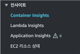
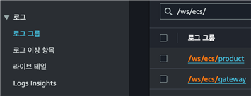

채점 유의사항
※ 다음 사항을 유의하여 채점하시오.
- 채점하는 서버가 선수의 서버가 맞는지 확인합니다. 순서대로 채점을 진행하며 리소스 삭제시 이후 채점이 불가할 수 있으니 신중히 진행하도록 합니다.
참고※ 채점기준 양식은 반드시, 양식에 맞추어 작성해야 합니다.(채점사이트 입력에 필요)
배점 요약
주요항목별 배점
| 번호 | 주요항목 | 배점 | 채점방법 | 채점시기 |
|---|---|---|---|---|
| 1 | Network | 10 | 독립 | 경기 종료후 |
| 2 | Container | 20 | 독립 | 경기 종료후 |
| 3 | Database | 10 | 독립 | 경기 종료후 |
| 4 | Monitoring | 10 | 독립 | 경기 종료후 |
| 합계 | 50 |
세부항목별 배점
| 번호 | 항목 | 배점 |
|---|---|---|
| 1-1 | VPC CIDR | 1 |
| 1-2 | Private internet access 1 | 1.5 |
| 1-3 | Private internet access 2 | 1.5 |
| 1-4 | Public internet access | 1.5 |
| 1-5 | Private zone | 1.5 |
| 1-6 | Public zone | 1.5 |
| 1-7 | LoadBalancer zone | 1.5 |
| 2-1 | ECS Cluster | 0.5 |
| 2-2 | Gateway TaskDefinition | 1.5 |
| 2-3 | Product TaskDefinition | 1.5 |
| 2-4 | Gateway Service | 1.5 |
| 2-5 | Product Service | 1.5 |
| 2-6 | Gateway container image tag | 1.5 |
| 2-7 | Product container image tag | 1.5 |
| 2-8 | Gateway image security | 1.5 |
| 2-9 | Product image security | 1.5 |
| 2-10 | Container HA | 1.5 |
| 2-11 | Gateway Service HA | 1.5 |
| 2-12 | Product Service HA | 1.5 |
| 2-13 | ECS ServiceConnect 1 | 1.5 |
| 2-14 | ECS ServiceConnect 2 | 1.5 |
| 3-1 | DynamoDB table | 1 |
| 3-2 | Table mode | 1.5 |
| 3-3 | Table protection | 1.5 |
| 3-4 | Table backup | 1.5 |
| 3-5 | Table encryption | 1.5 |
| 3-6 | Data inserting | 1.5 |
| 3-7 | Data reading | 1.5 |
| 4-1 | CloudWatch dashboard | 1 |
| 4-2 | Service metrics | 1.5 |
| 4-3 | CloudWatch alarm | 1.5 |
| 4-4 | Service error metric | 1.5 |
| 4-5 | Container Insights | 1.5 |
| 4-6 | CloudWatch LogGroup | 1.5 |
| 4-7 | Container logging | 1.5 |
| 합계 | 50 |
채점 항목
1. Network
1-1. VPC CIDR · 1점
- SSH를 통해 Bastion 서버에 접근합니다.
- 아래 명령어 입력 후 "10.101.0.0/16"이 출력되는지 확인합니다.
$ aws ec2 describe-vpcs --filter Name=tag:Name,Values=ws-vpc --query "Vpcs[].CidrBlock"
1-2. Private internet access 1 · 1.5점
- SSH를 통해 Bastion 서버에 접근합니다.
- 아래 명령어 입력 후 "nat-" 로 시작하는 문구가 출력되는지 확인합니다.
$ aws ec2 describe-route-tables --filter Name=tag:Name,Values=ws-priv-rt-a \
--query "RouteTables[].Routes[].NatGatewayId"
1-3. Private internet access 2 · 1.5점
- SSH를 통해 Bastion 서버에 접근합니다.
- 아래 명령어 입력 후 "nat-" 로 시작하는 문구가 출력되는지 확인합니다.
$ aws ec2 describe-route-tables --filter Name=tag:Name,Values=ws-priv-rt-c \
--query "RouteTables[].Routes[].NatGatewayId"
1-4. Public internet access · 1.5점
- SSH를 통해 Bastion 서버에 접근합니다.
- 아래 명령어 입력 후 "igw-" 로 시작하는 문구가 출력되는지 확인합니다.
$ aws ec2 describe-route-tables --filter Name=tag:Name,Values=ws-pub-rt \
--query "RouteTables[].Routes[].GatewayId"
1-5. Private zone · 1.5점
- SSH를 통해 Bastion 서버에 접근합니다.
- 아래 명령어 입력 후 "ap-northeast-2a"가 출력되는지 확인합니다.
$ aws ec2 describe-subnets --filter Name=tag:Name,Values=ws-priv-a --query \
"Subnets[].AvailabilityZone"
1-6. Public zone · 1.5점
- SSH를 통해 Bastion 서버에 접근합니다.
- 아래 명령어 입력 후 "ap-northeast-2c"가 출력되는지 확인합니다.
$ aws ec2 describe-subnets --filter Name=tag:Name,Values=ws-pub-c --query \
"Subnets[].AvailabilityZone"
1-7. LoadBalancer zone · 1.5점
- SSH를 통해 Bastion 서버에 접근합니다.
- 아래 명령어 입력 후 "ap-northeast-2a", "ap-northeast-2c"가 출력되는지 확인합니다.
$ aws elbv2 describe-load-balancers \
--query "LoadBalancers[?LoadBalancerName=='gateway-alb-pub'].AvailabilityZones[].ZoneName"
2. Container
2-1. ECS Cluster · 0.5점
- SSH를 통해 Bastion 서버에 접근합니다.
- 아래 명령어 입력 후 "ws-cluster"가 출력되는지 확인합니다.
$ aws ecs describe-clusters --cluster ws-cluster --query "clusters[].clusterName"
2-2. Gateway TaskDefinition · 1.5점
- SSH를 통해 Bastion 서버에 접근합니다.
- 아래 명령어 입력 후 "gateway-td"가 출력되는지 확인합니다.
$ aws ecs describe-task-definition --task-definition gateway-td \
--query "taskDefinition.containerDefinitions[].name"
2-3. Product TaskDefinition · 1.5점
- SSH를 통해 Bastion 서버에 접근합니다.
- 아래 명령어 입력 후 "product-td"가 출력되는지 확인합니다.
$ aws ecs describe-task-definition --task-definition product-td \
--query "taskDefinition.containerDefinitions[].name"
참고원문 불일치: 2-2, 2-3의 명령은 작업 정의 이름이 아니라 컨테이너 이름(
containerDefinitions[].name)을 출력합니다. 문제지는 컨테이너 이름을 지정하지 않으므로, 작업 정의gateway-td/product-td가 존재해도 기대 문자열이 나오지 않을 수 있습니다. 작업 정의 이름 자체는--query "taskDefinition.family"로 확인됩니다.
2-4. Gateway Service · 1.5점
- SSH를 통해 Bastion 서버에 접근합니다.
- 아래 명령어 입력 후 ACTIVE가 출력되는지 확인합니다.
$ aws ecs describe-services --cluster ws-cluster --services gateway-svc \
--query "services[].status"
2-5. Product Service · 1.5점
- SSH를 통해 Bastion 서버에 접근합니다.
- 아래 명령어 입력 후 ACTIVE가 출력되는지 확인합니다.
$ aws ecs describe-services --cluster ws-cluster --services product-svc \
--query "services[].status"
2-6. Gateway container image tag · 1.5점
- SSH를 통해 Bastion 서버에 접근합니다.
- 아래 명령어 입력 후 이미지 마지막이 latest 가 아닌지 확인합니다.
(latest가 포함되면 감점)
$ aws ecs describe-task-definition --task-definition gateway-td \
--query "taskDefinition.containerDefinitions[].image"
2-7. Product container image tag · 1.5점
- SSH를 통해 Bastion 서버에 접근합니다.
- 아래 명령어 입력 후 이미지 마지막이 latest 가 아닌지 확인합니다.
(latest가 포함되면 감점)
$ aws ecs describe-task-definition --task-definition product-td \
--query "taskDefinition.containerDefinitions[].image"
2-8. Gateway image security · 1.5점
- SSH를 통해 Bastion 서버에 접근합니다.
- 아래 명령어 입력 후 "CRITICAL", "HIGH", "MEDIUM", "LOW" 중 어떤 것도 출력되지 않는지 확인 합니다.(출력 되면 감점)
$ aws ecr describe-image-scan-findings --repository-name gateway \
--image-id imageTag=v1.0.0 --query "imageScanFindings.findingSeverityCounts"
2-9. Product image security · 1.5점
- SSH를 통해 Bastion 서버에 접근합니다.
- 아래 명령어 입력 후 "CRITICAL", "HIGH", "MEDIUM", "LOW" 중 어떤 것도 출력되지 않는지 확인 합니다.(출력 되면 감점)
$ aws ecr describe-image-scan-findings --repository-name product \
--image-id imageTag=v1.0.0 --query "imageScanFindings.findingSeverityCounts"
2-10. Container HA · 1.5점
- SSH를 통해 Bastion 서버에 접근합니다.
- 아래 명령어 입력 후 4 이상의 숫자가 출력되는지 확인합니다.
$ aws ecs describe-clusters --cluster ws-cluster --query "clusters[].runningTasksCount"
2-11. Gateway Service HA · 1.5점
- SSH를 통해 Bastion 서버에 접근합니다.
- 아래 명령어 입력 후 "subnet-"로 시작하는 문자열이 2개 이상 출력되는지 확인합니다.
$ aws ecs describe-services --cluster ws-cluster --services gateway-svc \
--query "services[].networkConfiguration.awsvpcConfiguration.subnets[]"
참고이 명령은 서비스가
awsvpc네트워크 모드일 때만 서브넷을 출력합니다. 문제지에는 네트워크 모드 지정이 없습니다(2-12 동일).
2-12. Product Service HA · 1.5점
- SSH를 통해 Bastion 서버에 접근합니다.
- 아래 명령어 입력 후 "subnet-"로 시작하는 문자열이 2개 이상 출력되는지 확인합니다.
$ aws ecs describe-services --cluster ws-cluster --services product-svc \
--query "services[].networkConfiguration.awsvpcConfiguration.subnets[]"
2-13. ECS ServiceConnect 1 · 1.5점
- Gateway 컨테이너에 SHELL로 접근합니다.
- 아래 명령어 입력 후 CONN_PRODUCT에 매핑된 아이피가 존재 하는지 확인합니다.
$ export | grep -i CONN_PRODUCT
- (편법으로 풀었다고 판단될 시 ECS namespace와 ecs-service-connect에 해당하는 proxy-container가 추가 되었는지 확인)
2-14. ECS ServiceConnect 2 · 1.5점
- Gateway 컨테이너에 SHELL로 접근합니다.
- 아래 명령어 입력 후 {"status": "OK", "app": "product"}가 출력 되는지 확인합니다.
$ curl http://product/health
- (편법으로 풀었다고 판단될 시 ECS namespace와 ecs-service-connect에 해당하는 proxy-container가 추가 되었는지 확인)
3. Database
3-1. DynamoDB table · 1점
- SSH를 통해 Bastion 서버에 접근합니다.
- 아래 명령어 입력 후 ACTIVE 라고 출력 되는지 확인합니다.
$ aws dynamodb describe-table --table-name "product" --query "Table.TableStatus"
3-2. Table mode · 1.5점
- SSH를 통해 Bastion 서버에 접근합니다.
- 아래 명령어 입력 후 PAY_PER_REQUEST 라고 출력 되는지 확인합니다.
$ aws dynamodb describe-table --table-name "product" \
--query "Table.BillingModeSummary.BillingMode"
3-3. Table protection · 1.5점
- SSH를 통해 Bastion 서버에 접근합니다.
- 아래 명령어 입력 후 true 라고 출력 되는지 확인합니다.
$ aws dynamodb describe-table --table-name "product" \
--query "Table.DeletionProtectionEnabled"
3-4. Table backup · 1.5점
- SSH를 통해 Bastion 서버에 접근합니다.
- 아래 명령어 입력하여 하나 이상의 Backup이 존재 하는지 확인합니다.
("BackupSummaries": [] 만 나오면 틀린것으로 간주)
$ aws dynamodb list-backups --table-name product
3-5. Table encryption · 1.5점
- SSH를 통해 Bastion 서버에 접근합니다.
- 아래 명령어 입력하여 SSE에 사용한 KMS Arn이 출력 되며, 해당 KMS가 선수의 계정에 있는것인지 확인 합니다.
$ aws dynamodb describe-table --table-name product \
--query "Table.SSEDescription.KMSMasterKeyArn"
3-6. Data inserting · 1.5점
- SSH를 통해 Bastion 서버에 접근합니다.
- 아래 명령어를 입력해 데이터 삽입을 위한 요청이 성공하여 result가 added인지 확인합니다.
3-7 채점을 위하여 결과값으로 출력된 uuid를 기록 합니다.
$ curl --silent -X POST -H "Content-Type: application/json" \
-d '{"name": "mug", "owner": "jenkins_choi"}' http://${ALB}/v1/item
3-7. Data reading · 1.5점
- SSH를 통해 Bastion 서버에 접근합니다.
- 3-6에서 출력된 uuid를 활용해 아래 명령어를 입력하여 mug가 출력 되는지 확인합니다.
$ curl --silent -X GET http://${ALB}/v1/item?uuid=<<3-6 출력 ID>>
4. Monitoring
4-1. CloudWatch dashboard · 1점
- 웹 브라우저를 사용해 AWS 콘솔에 접속합니다.
- CloudWatch 페이지로 이동하여 왼쪽 탭에서 대시보드(Dashboard)를 클릭합니다.
- ProductService 이름의 대시보드가 생성되어 있는지 확인합니다.

4-2. Service metrics · 1.5점
- 웹 브라우저를 사용해 AWS 콘솔에 접속합니다.
- CloudWatch에서 선수가 구성한 "ProductService" 대시보드에 접근합니다.
- EC2의 CPU, Network를 확인 할 수 있는 그래프가 있는지 확인합니다.
- ALB의 4xx, 5xx 에러를 확인 할 수 있는 그래프가 있는지 확인합니다.
4-3. CloudWatch alarm · 1.5점
- 웹 브라우저를 사용해 AWS 콘솔에 접속합니다.
- CloudWatch 페이지로 이동하여 왼쪽 탭에서 모든 경보(All alarms)를 클릭합니다.
- ALB 4xx에 대한 alarm이 생성 되어 있고, 현재 정상(OK) 상태인지 확인합니다.
- Bastion에 SSH로 접근하여 아래 명령어를 빠른 속도로 20회 이상 입력 합니다. (1분 내에)
$ curl -X GET http://<ALB>/v1/errors4xx
- AWS 콘솔에서 경보를 확인해 4xx 상태가 "정상(OK)"에서 다른것으로 변경 됐는지 확인합니다.(curl 명령어 입력 후 최대 5분 대기 가능)
4-4. Service error metric · 1.5점
- 웹 브라우저를 통해 AWS 콘솔에서 ProductService 대시보드에 접근합니다.
- 그래프에서 ALB의 4xx 가 위 명령어를 입력한 시점에 높아 졌는지 확인합니다.
4-5. Container Insights · 1.5점
- 웹 브라우저를 사용해 AWS 콘솔에 접속합니다.
- CloudWatch 페이지로 이동하여 왼쪽 탭에서 Container Insights를 클릭합니다.

- Gateway와 Product task 들에 대해 CPU Utilization, Memory Utilization을 확인합니다.
4-6. CloudWatch LogGroup · 1.5점
- 웹 브라우저를 사용해 AWS 콘솔에 접속합니다.
- CloudWatch 페이지로 이동하여 왼쪽 탭에서 로그 그룹을 클릭합니다.
- /ws/ecs/product, /ws/ecs/gateway 두개의 로그그룹이 존재 하는지 확인합니다.

4-7. Container logging · 1.5점
- 웹 브라우저를 사용해 AWS 콘솔에 접속합니다.
- CloudWatch 로그 그룹에서 /ws/ecs/product를 클릭합니다.
- mug 를 검색하여 나오는 로그가 있는지 확인 합니다.
원문 대비 수정 내역
원문 대비 수정 내역 (7건) — 원본 시험지와 달라진 부분과 근거
| 위치 | 원문 | 수정 | 사유 |
|---|---|---|---|
| 1-7 명령어 | --query LoadBalancers[?LoadBalancerName==gateway-alb-pub'].AvailabilityZones[].ZoneName" |
--query "LoadBalancers[?LoadBalancerName=='gateway-alb-pub'].AvailabilityZones[].ZoneName" |
여는 따옴표·리터럴 따옴표 누락으로 실행 불가 |
| 2-1 기대값 | wsi-cluster |
ws-cluster |
문제지 7. ECS와 같은 항목의 명령어(--cluster ws-cluster)가 ws-cluster |
| 2-2, 2-3 | containerDefinitions[].name 결과로 gateway-td/product-td 확인 |
NOTE 추가 | 명령은 컨테이너 이름을 출력하며 문제지는 컨테이너 이름을 지정하지 않음 |
| 2-10 명령어 | --cluster wsi-ecs |
--cluster ws-cluster |
문제지 클러스터 이름이 ws-cluster |
| 2-11, 2-12 명령어 | awsvpcConfiguration[].subnets[] |
awsvpcConfiguration.subnets[] + NOTE 추가 |
awsvpcConfiguration은 객체라 []를 붙이면 null이 되어 아무것도 출력되지 않음. awsvpc 모드에서만 값이 있으며 문제지에 모드 지정 없음 |
| 4-3 제목·본문, 세부항목 표 | CloudWatch alram, All alrams, alram이 |
CloudWatch alarm, All alarms, alarm이 |
오타 (4곳) |
| 본문 전체 | 둥근 따옴표 “ ” (짝이 맞지 않는 것 포함) |
ASCII " |
기대 출력값 표기 통일 (21곳) |